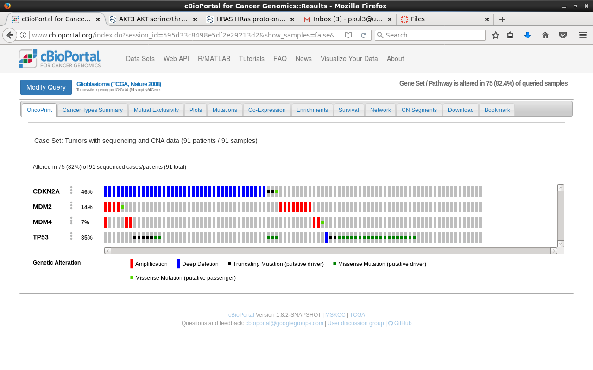
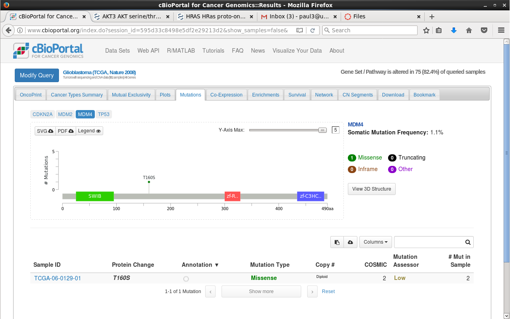

MSBI 32400: Lab 9
Author: Paul Maripadavil
Date Created: 8/16/2017
Preparing New Lab Directories
$ cd~ $ mkdir -p /data/lab9/data /data/lab9/doc /data/lab9/bin /data/lab9/results /data/lab9/src
$ cd /data/lab9/doc
$ mv ~/Downloads/course_files_export.zip .
Preparing Lab Documents
$ touch READMEpaul_lab9.md
$ mv ~/Downloads/course_files_export.zip .
$ unzip course_files_export.zip
Copying the Buffalo template.sh
$ cd /data/bin/
$ cp /data/bds-files/chapter-12-pipelines/template.sh .
Find some WebDocuments
$ cd /data $ find . -name "WebDocument*" -print | xargs ls -lh >
-rw-rw-r--. 1 student student 3.1K Jul 5 19:29 ./lab3/data/WebDocument_9-05_101AutismPanel.bed.txt >
-rw-rw-r--. 1 student student 3.0M Jul 5 19:30 ./lab3/data/WebDocument_9-7_mysample1.bai >
-rw-rw-r--. 1 student student 326M Jul 5 19:40 ./lab3/data/WebDocument_9-7_mysample1.bam >
-rw-rw-r--. 1 student student 327M Jul 11 23:46 ./lab3/data/WebDocument_9-7_mysample1_file_sorted.bam >
-rw-rw-r--. 1 student student 3.0M Jul 11 23:48 ./lab3/data/WebDocument_9-7_mysample1_file_sorted.bam.bai >
-rw-rw-r--. 1 student student 1.6G Jul 11 23:41 ./lab3/data/WebDocument_9-7_mysample1.sam
More bash exercises
$ cd lab9/data/
$ touch nothing.temp.fastq
$ touch something.temp.fastq
$ cp /data/lab9/bin/template.sh .
$ find . -name "*temp.fastq" | xargs -n 1 echo 'rm -i' > delete-temp.sh
$ bash delete-temp.sh >
> rm: remove regular empty file ./nothing.temp.fastq'? y
> rm: remove regular empty file. /something.temp.fastq'? y
Find all data directories in /data
$ find . -name "data" -type d
> ./lab4/data
> ./lab6/data
> ./lab3/data
> ./lab3/data/bedtools2/data
> ./BioPython/lib/python3.3/site-packages/numpy/core/tests/data
> ./BioPython/lib/python3.3/site-packages/numpy/lib/tests/data
> ./BioPython/lib/python3.3/site-packages/Bio/PopGen/SimCoal/data
> ./lab5/data
> ./lab8/data
> ./bds-files/chapter-08-r/motif-example/data ./snpEff/data
> ./lab9/data
> ./lab7/data
Find all file modified within the past 14 days and find file size
$ find -type f -mtime -14 | xargs ls -lh
-rw-r--r--. 1 student student 388 Aug 9 23:11
./lab8/data/pevsner_chr20_3_problem.sh -rw-rw-r--. 1 student student 3.6K Aug 16 17:21
./lab8/doc/READMEpaul_lab8.md -rw-rw-r--. 1 student student 170 Aug 9 20:29
./lab8/results/genes_by_chr.txt -rw-rw-r--. 1 student student 6.3K Aug 9 19:58
./lab8/results/snpEff_genes.txt -rw-rw-r--. 1 student student 361K Aug 9 19:58
./lab8/results/snpEff_summary.html -rw-rw-r--. 1 student student 13M Aug 9 20:00
./lab8/results/TSVC_variants.snpEff.clinvar.vcf -rw-rw-r--. 1 student student 12M Aug 9 19:58
./lab8/results/TSVC_variants.snpEff.vcf -rw-rw-r--. 1 student student 43 Aug 16 18:45
./lab9/bin/template.sh -rw-rw-r--. 1 student student 56 Aug 16 19:59
./lab9/data/delete-temp.sh -rw-rw-r--. 1 student student 43 Aug 16 19:47
./lab9/data/template.sh -rw-rw-r--. 1 student student 448 Aug 16 18:46
./lab9/doc/READMEpaul_lab8.md -rw-r--r--. 1 student student 12K Aug 16 20:21
./lab9/doc/.READMEpaul_lab8.md.swp
Using cBioPortal for find gene that cause Glioblastoma
Glioblastoma (TCGA, Nature 2008)
Gene: TP53
Drug Name: SCH-529074
Number of Genes Targeted: 1
OncoPrint for Glioblastoma
MutationMapper for Glioblastoma
Using cBioPortal for find gene that cause Prostate Adenocarinoma
Prostate Adenocarcinoma (MSKCC, Cancer Cell 2010)
Gene: Gene Symbol: AR Description: androgen receptor
Drug Name: NANDROLONE
Number of Genes Targeted: 1